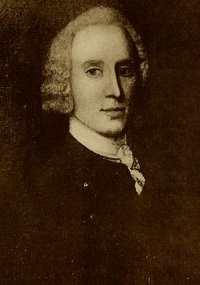
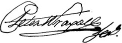

Peter Wraxall
Peter Wraxall was born was born about 1720. He was the son of John Wraxall of Bristol, England. Coming of age in a once-substantial business family that had fallen on hard times, Peter left home to seek his fortune. In 1745, he was identified as a mariner and was on his way to Virginia on the ship David.
 Prior to that, he may have spent time in Holland and also in Jamaica. In 1746, he was on Long Island where he was raising a company to serve in an expedition against Canada. A year later, he returned to England to seek a commission or other preferment.
In 1750, he received two royal commissions. First, he was appointed "Secretary or Agent for the Government of New York to the Indians." Then, he was commissioned "Town Clerk of the Peace, and Clerk of the Common Pleas in the County and City of Albany." Armed with these strange but official documents, he returned to America - arriving in New York to find that the governor had recently appointed Albany's Harmen Gansevoort to the Albany clerkship.
Wraxall sought legal recourse to validate his claim to the clerk's office. Failing in that, he did succeed in becoming Secretery of the Commissioners of Indian Affairs. In that position he served the Albany Commissioners and also their nemesis, Sir William Johnson, faithfully and well for the remainder of his life.
Understanding the critical and delicate nature of Indian relations during the 1750s, Wraxall sought to provide a historical perspective on more than a half-century of Indian diplomacy by compiling an abridged version of the existing Indian records that had been kept by his predecessors, the Livingstons. Although the manuscript was ignored by Wraxall's contemporaries, the exercise made him one of the best informed officials of his time. He also served as secretary at the Albany Congress held during the summer of 1754.
When William Johnson superceded the Albany Indian Commissioners in 1755, Wraxall continued as the secretery to the now Superintendent of Indian Affairs. Wraxall's duties were expanded when he became Johnson's aide-de-camp and accompanied Sir William on the battlefield, to Indian conferences, and also to New York. During that time, Wraxall had taken up residence at Albany - perhaps in Sir William's Albany house. In recognition of his service, Wraxall was commissioned a captain in the New York regiment of the British army in 1755. But poor health prevented him from assuming a command. In 1756, he married Elizabeth Stilwell and retired to New York City to live with his wife. During his final years, he was able to attend a number of Indian conferences as Johnson's aide.
Peter Wraxall died in New York City on July 10, 1759 and was buried in the cemetery of Trinity Church. His will left bequests to his "honored father and friend," two sisters and a neice in England, and to William Johnson. The rest of his estate went to his "most excellent and dearly beloved wife, Elizabeth," who was made exectutor. Also acknowledged was his wife's sister Anne Dewine of New York City, who cared for him during his final illness.
 The life of Peter Wraxall is CAP biography
number 6943. The most comprehensive biographical study of him
is Charles Mc Ilwain's sketch in the introduction to "Wraxall's
Abridgement", c-cxviii. He also has been the subject of a biographical
profile published in American
National Biography. More accessible is the Wikipedia article. See also: Biographical
Notice of Peter Wraxall.
The life of Peter Wraxall is CAP biography
number 6943. The most comprehensive biographical study of him
is Charles Mc Ilwain's sketch in the introduction to "Wraxall's
Abridgement", c-cxviii. He also has been the subject of a biographical
profile published in American
National Biography. More accessible is the Wikipedia article. See also: Biographical
Notice of Peter Wraxall.
Sepia-tone copy of a portrait of unknown origin as printed in the Biographical Notice of Peter Wraxall, facing page 102. Another, less distinct copy appears in Sir William Johnson Papers 13, facing page 86.
Although travelling to England on "urgent private business," he carried dispatches for New York Governor George Clinton that asked the recipient to "permit the bearer Capt. Wraxal to acquaint you with what he knows . . . He raised a Company in this Province on the Expedition intended last year against Canada. As he behaved well on all occasions, and is well acquainted with many transactions as well Civill as Military in this Province." Printed in NYCD VI, 377.
Livingston: Robert Livingston, Robert Livingston, Jr., and Philip Livingston held the secretary's office until his death in 1749.